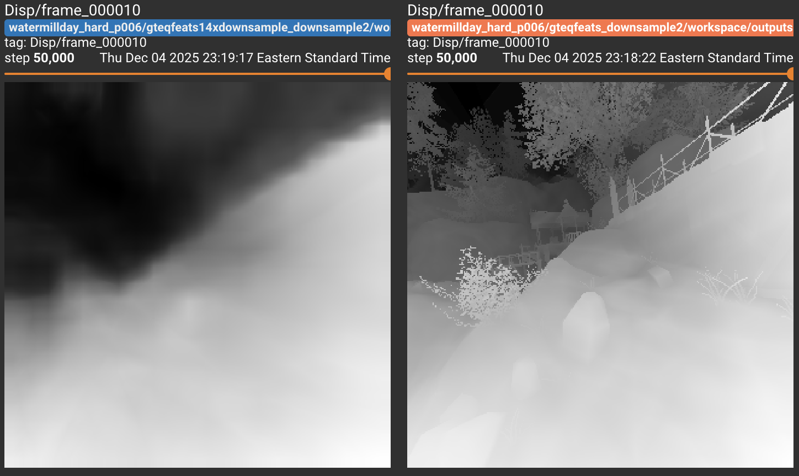
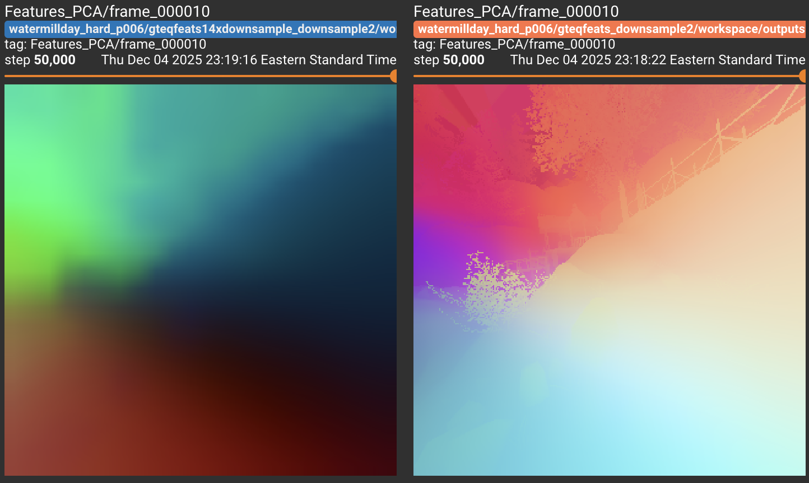
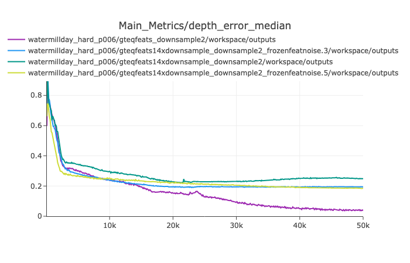
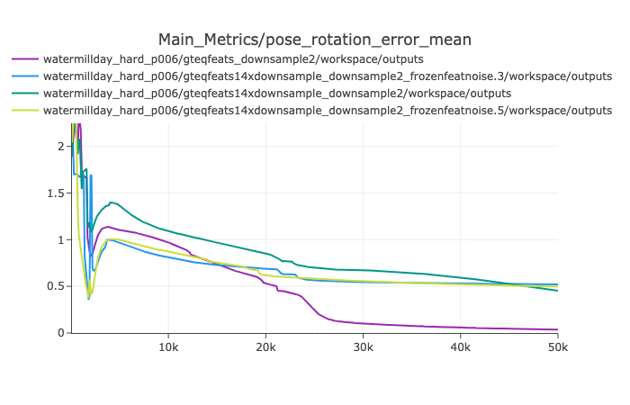
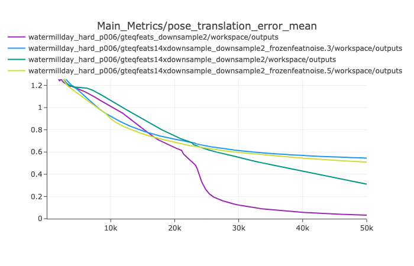
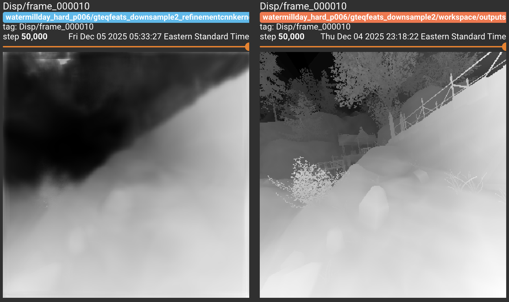
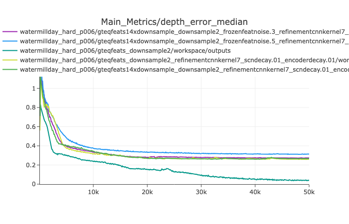
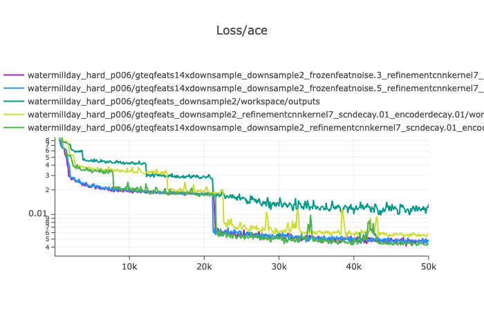

Visual deep learning has yet to have a “GPT” moment. Visual deep learning has yet to have a “GPT” moment. The GPT revelation was that most NLP tasks can be unified under the input/output behavior of a decoder-only transformer (Radford et al. 2019) and zero-shotted or few-shotted from minimal data after pretraining on unlabeled internet data. The vision community has yet to find an unzupervised analog that enables zero-shotting of 3D reasoning. While there are promising avenues with video models (Wiedemer et al. 2025), vision lacks a comparable formulation: the inputs are 2D RGB pixels, while the outputs we care about for 3D reasoning, metric depths, pointmaps, surface normals, camera poses, live in a different space and must satisfy hard geometric constraints. Simply scaling up unlabeled internet images or videos is unlikely to produce zero-shot metric 3D estimates, both because quantities like depth and scene coordinates are not naturally expressed as RGB values and because there is no web-scale corpus where each pixel is annotated with accurate depth or pose. By contrast, internet text already contains implicit supervision for tasks such as summarization, sentiment analysis, and classification. High-quality 3D supervision instead requires active sensors, multi-view reconstruction, or depth cameras, which are expensive and scene-specific.
In this project, we seek progress on a GPT moment for dense 3D understanding. We demonstrate that with dense descriptive 3D equivariant input features, even if high dimensional / extremely complex / highly nonlinear, can allow unsupervised depth, pointmap, and camera estimation without any ground truth. While our 3D equivariant features used in this project are largely synthetic, we see this as a stepping stone to using off-the-shelf featurizers.
In this project, we draw primarily from three families of work: (1) 3D equivariance in visual feature learning, (2) scene coordinate regression methods for visual relocalization and mapping (in particular the ACE (Brachmann et al. 2023) line of work), and (3) underconstrained 3D estimation methods where supervision is provided only through reprojection or rendering objectives. We position our approach at the intersection of these areas: we assume access to 3D-equivariant features, adopt a scene coordinate regression–style architecture, and study how far an underconstrained, label-free objective can be pushed when combined with strong equivariance structure.
3D Equivariance Let’s start with a nontechnical definition of 3D Equivariance: a function (or in our case, pixel aligned featurizer) is 3D equivariant if any changes in the image due to camera motion are reflected by identical changes in the output feature map. More formally, if an transform \(f\) is equivariant to all transforms \(g\in G\) of an image \(I\), it obeys the following relationship \[f(g \cdot I) = g \cdot f(I).\]
In our case, \(G\) is the set of operations that unprojects the image into 3D space, applies a rigid body \(\mathrm{SE}3\) transform, and reprojects the points onto a new image plane, and the relationship is only expected to hold where there is covisibility between cameras.
Many works have observed that large unsupervised visual models like DINO (Oquab et al. 2024), MAE (He et al. 2021), CLIP (Radford et al. 2021) have nontrivial 3D equivariance properties (Banani et al. 2024; You et al. 2025). This is in line with more generic semantic correspondences literature (Luo et al. 2024; Tang et al. 2023; Zhang et al. 2024) demonstrating that 2D semantic correspondences can be formed across photometrically and geometrically distinct objects of the same category.
From semantic correspondences literature, we have seen that this does have the caveat that the descriptiveness of these features can sometimes be questionable. It has been cataloged that these large unsupervised visual models exhibit a lot of ambiguity in their feature outputs, being often unable to provide descriptive features to discern through symmetries and repeated instances of objects / object parts present in images (Zhang et al. 2024). This shows that while these features often have nice equivariance properties, they are often not descriptive enough to differentiate structures found within images. Obtaining features which, without explicit 3D supervision, are more 3D equivariant and more descriptive remains an open and important question within the community.
While in this work, for simplicity, we use primarily synthetically generated features, we see this line of work and its continual improvements as a means to scale up our approach and make it truly unsupervised instead of needing to start from ground truth 3D equivariant features.
Scene Coordinate Regression For the technical aspects of this paper, we draw from Accelerated Coordinate Embedding (Brachmann et al. 2023) (ACE), which is a method that ingests many posed images of a scene, and regresses directly a pointmap estimator for images of that scene. Images are passed through 1) a pretrained frozen CNN backbone and 2) a pointmap head made of 1x1 convolutions. The stunning thing about ACE is that the only loss placed on the pointmap regression head’s ouptuts is that its 3D point predictions need to reproject back onto the camera at the correct location (hence why the input images need to be posed). This is very underconstrained on paper, because if the pointmap outputs 3D coordinates at any depth along the ray, it will achieve zero loss.
ACEZero (Brachmann et al. 2024) is a follow up work which draws from COLMAP (Schönberger and Frahm 2016) and classical incremental scene optimization. It requires a single depth image to start from, and alternates between 1) training a 1x1 convolution scene regression head on top of frozen image features 2) relocalizing the images with RANSAC from the current scene estimate. This alternating optimization helps resolve some of the degeneracies of the reprojection loss but makes the pipeline tightly coupled to iterative pose estimation and a depth-based initialization. As a result, it is not an end-to-end feed-forward deep learning method, and the reliance on an initial depth frame means it is not fully unsupervised or prior-free in the sense we aim for in this project.
Underconstrained 3D In general, many works like NeRF (Mildenhall et al. 2020) exist where the loss function is underconstrained for the full 3D scene reconstruction that we desire. NeRF is a case, not unlike ACE, where the only thing we care about is whether the reprojection of the scene matches what we would expect based on our posed images. NeRF places no constraints on how far away from the camera the actual scene structure is, simply that the scene looks correct when rendered out, and in principle there are shape–appearance tradeoffs that can produce nearly identical renderings. We later draw on similarities between our work and these underconstrained 3D works for justification of why we expect to achieve convergence.
In our method, we ingest high-dimensional and highly nonlinear pixel-aligned feature maps for a single scene, and solve for a pointmap estimation head and directly optimize for raw cameras and intrinsics over the entire trajectory (as opposed to a prediction head). We randomly initialize all these quantities with random numbers, optimizing only using a reformulation of the ACE loss without requiring any hand-crafted regularizers. This is distinct from the original ACE formulation where the cameras were fixed ahead of time in the correct location with the correct intrinsics.
The motivation for the design choices comes from 1) the improving 3D equivariance properties that emerge from large unsupervised vision models and the belief that we are close to having excellent unsupervised mappers from raw pixels to high dimensional 3D equivariant features 2) ACE convergence is guaranteed for 3D equivariant features 3) we want an algorithm that is compatible with end-to-end deep learning and can provide clean gradients onto our 3D estimations from any initialization without any non-differentiable classical components line RANSAC (which ACE / ACEZero employ).
Loss Function We reformulate the ACE loss to avoid using reprojection, instead opting for a ray-based loss. For a single camera, we define define the camera as \((f, R, \mathbf{t})\), and our scene coordinates as \(\mathbf{p}\), which when warped into camera coordinates become \(\mathbf{p}_c(R, \mathbf{t})\). We minimize the angle between the observed rays from our 3D pointmap estimate and camera center in camera coordinates \(\hat{\textbf{r}}(R, \textbf{t}, \textbf{p})\), and the camera rays which are the unprojected 2D coordinates \(\textbf{r}(f)\) in camera coordinates.
To avoid the singularity where the focal lengths get large and the scene coordinate estimates converge to a single point, we use the focal length to do an affine warp of our camera coordinate system. Using \(\text{T}=\text{diag}(f, f, 1) \in \mathbb{R}^{3\times3}\), we obtain \(\textbf{r}_w=\text{T}\textbf{r}\) and \(\hat{\textbf{r}}_w(f, R, \textbf{t}, \textbf{p})=\text{T}\hat{\textbf{r}}\). This specific warping of the camera coordinate space transforms our camera rays \(\textbf{r}(f)\) in a way that makes them independent of focal length, turning \(\textbf{r}_w\) into a standard raybundle that will be constant for all images.
\[\begin{equation} \begin{aligned} &\underset{\mathbf{p}(\theta), f, R, \textbf{t}}{\text{minimize}} &&\arccos(\textbf{r}_w,\hat{\textbf{r}}_w), \\ \end{aligned} \end{equation}\]
This warping of space according to \(\text{T}\) doesn’t change the true minimizer as a zero loss solution, since camera and observed rays that were identical before the warp remain identical after the warp making an angle of zero, it merely removes a degenerate solution. We observe that this reformulation of the loss is extremely robust to focal length initialization; we can truly initialize the focal lengths to any value and they will converge without any extra regularization or heuristics.
Model Configuration We ablate many design choices, but the core architecture follows ACE; a 1x1 convolution scene coordinate prediction head on top of frozen features. We arbitrarily choose 3 1x1 convolution layers with a ReLU, but the choice isn’t important. We use the Adam optimizer with a static learning rate to optimize for our scene coordinate network, our raw camera intrinsics, and raw camera extrinsics (just the focal length). We train for 50k gradient steps, by which point the scene has usually stopped improving, taking an hour on a single GPU for the smallest setups, and up to a day on a single GPU for our largest ablations with CNN refinement on the feature maps.
Convergence It is worth discussing why this converges at all and the role equivariant features play. As established, a 3D scene coordinate prediction outputs a HxWx3 map that is 3D equivariant because no matter what angle you view a 3D point from, the 3D coordinate itself in world coordinates doesn’t change. If we input 3D equivariant features to a MLP (or a network built of 1x1 convolutions), the output will always remain 3D equivariant (though the descriptiveness of the features may change). At a high level, making sure the input features are 3D equivariant ensures that our prediction head is also always going to be 3D equivariant, reducing the solution space significantly.
Alternatively, there is the perspective of implicit triangulation that allows ACE to converge. If a 3D point has multiple rays that intersect it from the ground truth cameras, and the features at the 2D correspondence locations are all the same, the scene coordinate prediction MLP will always output the same 1 point for each of these identical 2D features. As such, the gradients constructively interfere and push that shared MLP output towards the point of ray intersection that will minimize the reprojection loss from all views.
What follows from this last perspective is the clarity that when these features are no longer 3D equivariant, it is very very easy for the model to overfit and achieve zero loss. When you can unambiguously discern the xy pixel coordinate on the image plane that a feature correpsonds to, you can trivially just put all cameras at the identity, and always predict your meshgrids in front of the camera. When you can disambiguate between two views of the same point in space, it becomes trivial to cheat as the pointmap head to achieve zero loss.
Dataset We experiment on the TartanAir dataset, providing ground truth camera poses and depths to compare against. We test on only a few TartanAir scenes to prioritize doing as many method ablations as possible, as some of our larger ablations take many hours per run.
Metrics We measure the median depth error (normalizing by the median of the predicted and ground truth to avoid scale ambiguity), and the rotation (radians) / translation (normalized scene units) errors after using procrustes analysis to align the predicted and ground truth cameras.
3D Equivariant Features For the majority of our tests, we are using our own synthetic 3D equivariant features. These are obtained by taking the ground truth 3D pointmaps (a HxWx3 equivariant feature) and a randomly initialized 3 layer sigmoid nonlinearity MLP that will be thrown away after the features have been precomputed. We pass our ground truth pointmaps through this MLP which yields feature maps that are also 3D equivariant but have been scrambled in a high dimensional space.
Our primary result is that this loss function converges and yields an output that is faithful to the scene despite random initialization.
We demonstrate this in Fig. 2, where we visualize our reconstructed scene against the ground truth. Despite randomly initializing the cameras and the scene regressor, we still converge to the correct 3D reconstruction. You can see that our reconstruction is slightly wavy on account of using a sigmoid MLP to generate our 3D equivariant features and a relu MLP to predict the scene coordinates, but overall it is very faithful. Furthermore, it is impressive that this is all single-scene optimization, no other priors were used, and we did not need to train on a lot of scenes jointly to get these clean gradients.
The basic axis along which we test is what happens to our results when we corrupt the 3D equivariance of the features; do we still converge? We ablate this primarily by corrupting our ground truth 3D equivariant features in 3 ways and reporting the results: 1) downsampling by 14x and upsampling by 14x (mimicking DINO feature resolution), 2) corrupting the 14x downsampled / upsampled features by .3 standard deviations of gaussian noise and 3) corrupting the 14x downsampled / upsampled features by .3 standard deviations of gaussian noise.
We display the metrics in Fig. 4, and display some of the results qualitatively in Fig. 3. You can see that the PCA of the features we are working with once corrupted make it very difficult to discern the scene contents compared to the PCA of the original features. That being said, the depths seem to generally be doing the right thing even at these lower resolutions given the coarseness of the features they are predicting from.
 
  
Weight Decay We find that weight decay (AdamW) helps across all types of feature corruption. It doesn’t seem to change the end performance by much, but it does seem to improve convergence speed when setting weight decay to a small value of \(.01\).
Confidence Maps Following many more modern 3D vision papers, we also ablate adding aleatoric uncertainty to our pointmap estimates, and we find that it does worse across all noise scales, displayed in Tab [tab:confidence].
| Feature type | No conf. maps | With conf. maps |
|---|---|---|
| gteqfeats | 0.0385 | 0.2040 |
| gteqfeats14xdownsample | 0.2489 | 0.2806 |
| gteqfeats14xdownsample_frozenfeatnoise.3 | 0.1949 | 0.2403 |
| gteqfeats14xdownsample_frozenfeatnoise.5 | 0.1849 | 0.1989 |
  
CNN Refinement We find that adding a residual CNN refiner on top of our 3D-equivariant features Fig. 5 does not improve them: in our single-scene setup, while we get good gradients on cameras and scene coordinates, the refiner learns a nonzero residual that slightly lowers the loss while worsening depth, even though zero weights would pass through the ground-truth equivariant features that we know lead to convergence and lead to a smaller weight decay penalty.
Bug in the code/Implementation error: Small 3D-vision bugs (e.g., a 0.5-pixel center offset or other camera-geometry slips) could make the perfectly equivariant solution unreachable, so the refiner + head instead exploit a nearby lower-loss but incorrect configuration.
Limited Pointmap-Head Capacity / Features Are Too Nonlinear: Our synthetic features come from a 3-layer sigmoid MLP, while the pointmap estimator is a shallow 1×1-conv ReLU MLP; inverting these high-dimensional nonlinear features may simply exceed its capacity, so the refiner + head find it easier to “cheat” than to realize the ideal zero-loss solution.
Single-scene overfitting once equivariance is broken: With strictly 3D-equivariant features, the pointmap head is heavily constrained and effectively must perform implicit triangulation; once a CNN refiner can encode image-plane coordinates and view-specific quirks in a single scene, the model can satisfy the loss by memorizing per-pixel geometry (e.g., near-identity cameras + meshgrid-like outputs), whereas training jointly across many scenes (as in ACE) would make this kind of cheating much harder.
Pretrained Featurizers Another disappointment with this project was the failure of DINO features or other off-the-shelf featurizers to work as a direct substitute for our synthetic equivariant features. We experimented with MAE and DINO features without success. We found that it just overfit fairly easily, similar to the CNN case where it would just identify a lower loss solution than the baseline with significantly worse performance. The culprit here is likely the same as the CNN where the features are either too large and nonlinear for the pointmap estimation head and our pointmap estimation head just isn’t good at entangling these complex features to where if it can cheat due to small deltas in features between views, it’s easier to just cheat by overfitting to the minor inconsistencies.
We presented a simple ACE style pipeline for unsupervised dense 3D understanding that assumes access to 3D equivariant pixel aligned features. With a pointmap head and a geometric ray based loss, we showed that it is possible to recover camera poses and scene structure from random initialization on TartanAir without labels or classical pose estimation, and that synthetic equivariant features are enough to get a faithful single scene reconstruction with reasonable depth and pose errors.
Our ablations show that this setup can tolerate coarse downsampling and moderate noise, but breaks once equivariance and feature structure drift too far from the synthetic ideal. Confidence maps, CNN refinement, and pretrained DINO or MAE features tend to produce cheating solutions with lower loss but worse geometry. A likely reason is that these features are too complex and not sufficiently 3D equivariant for our simple pointmap head, so the easiest way to reduce loss is to encode image plane information or view specific artifacts rather than triangulate true 3D structure.